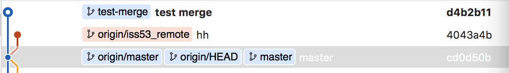
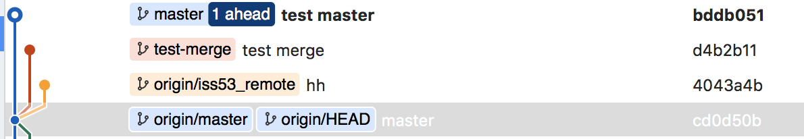
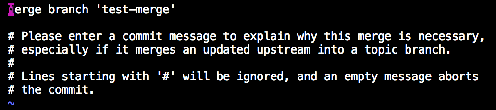
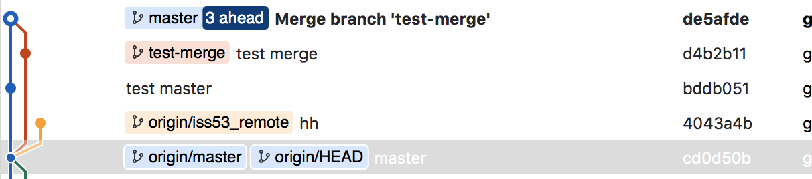
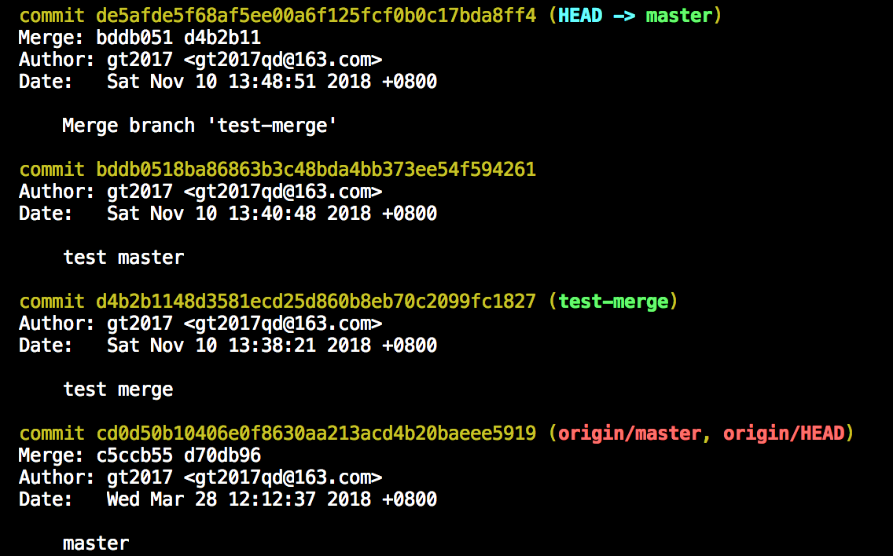
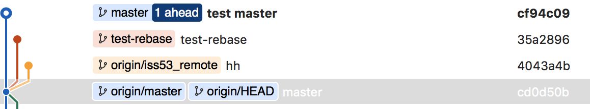
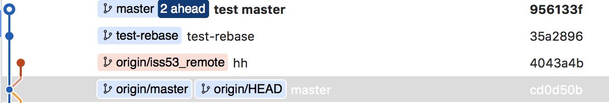

abstract
git中的merge和rebase的作用是将两个不同分支合并,最终合并得到的代码都是相同的.
区别就是merge是将开辟一个独立的新的commit,将两个分支进行合并到这个新的commit中;而rebase是在当前分支,将另一个分支的更改重做一次,生成一个新的commit.所以说,merge会比rebase多余的一个commit
introduction
本文主要介绍git merge与git rebase两个命令的不同.
操作过程
使用merge的效果
准备工作
从代码库获取项目代码:1
git clone xxx.git
做一些准备工作: 新建一个test-merge分支.1
2
3
4
5
6
7
8
9
10
11
12
13
14
15
16➜ test2 git:(master) gcb test-merge #新建一个用来merge分支
Switched to a new branch 'test-merge'
➜ test2 git:(test-merge) touch test-merge.txt
➜ test2 git:(test-merge) ✗ gst
On branch test-merge
Untracked files:
(use "git add <file>..." to include in what will be committed)
test-merge.txt
nothing added to commit but untracked files present (use "git add" to track)
➜ test2 git:(test-merge) ✗ ga .
➜ test2 git:(test-merge) ✗ gc -m 'test merge'
[test-merge d4b2b11] test merge
1 file changed, 0 insertions(+), 0 deletions(-)
create mode 100644 test-merge.txt
上图的代码中,在test-merge分支做了修改,提交了一个commit.

同理,在master分支也做了相同的处理,修改文件,提交一个commit.1
2
3
4
5
6
7
8
9➜ test2 git:(test-merge) gcm
Switched to branch 'master'
Your branch is up to date with 'origin/master'.
➜ test2 git:(master) touch master.txt
➜ test2 git:(master) ✗ ga .
➜ test2 git:(master) ✗ gc -m 'test master'
[master bddb051] test master
1 file changed, 0 insertions(+), 0 deletions(-)
create mode 100644 master.txt
具体的效果如图所示, master分支和test-merge分支各自前进一个commit.

使用merge合并的
1 | ➜ test2 git:(master) git merge test-merge |
此时需要在vim编辑器中输入此次merge的commit信息

两个分支共同生成一个新的特殊的commit.这个commit记录了来个哪两个分支.具体来说就是d35afed这个commit,比其他的commit多了一个信息,说明是来自bddb051和d4b2b11这两个commit的merge

使用rebase的效果
准备工作
现在将我们代码场景还原到merge之前.1
➜ test git:(master) git log # 查看所有的git commit-id(hash值)
此时会打开一个vim编辑器

找到所有操作之前的commit-id: cd0d50b10406e0f8630aa213acd4b20baeee59191
2➜ test2 git:(master) git reset --hard cd0d50b10406e0f8630aa213acd4b20baeee5919
HEAD is now at cd0d50b master
此时,我们的master分支的代码已经回归到了这个commit.另外, 将这个merge分支删去,否则就太乱了.1
2
3
4
5➜ test2 git:(master) gb -d test-merge
error: The branch 'test-merge' is not fully merged.
If you are sure you want to delete it, run 'git branch -D test-merge'.
➜ test2 git:(master) gb -D test-merge #git还十分贴心的提醒我删去的这个分支没有merge,情怀~! 所以就是-D 强制删去咯
Deleted branch test-merge (was d4b2b11).
一切,又回到了, 最初的起点,呆呆的站在镜子前~, 额 , 跑题了.
之前的套路,1
2
3
4
5
6
7
8
9
10
11
12
13
14
15➜ test2 git:(test-rebase) touch test-rebase.txt
➜ test2 git:(test-rebase) ✗ ga .
➜ test2 git:(test-rebase) ✗ gc -m 'test-rebase'
[test-rebase 35a2896] test-rebase
1 file changed, 0 insertions(+), 0 deletions(-)
create mode 100644 test-rebase.txt
➜ test2 git:(test-rebase) gcm
Switched to branch 'master'
Your branch is up to date with 'origin/master'.
➜ test2 git:(master) touch master.txt
➜ test2 git:(master) ✗ ga .
➜ test2 git:(master) ✗ gc -m 'test master'
[master cf94c09] test master
1 file changed, 0 insertions(+), 0 deletions(-)
create mode 100644 master.txt
此时为:

使用rebase合并
1 | ➜ test2 git:(master) git rebase test-rebase |

可以这么理解,在master分支上,将test-rebase分支做的改动重做一次,(感觉类似于数据库的日志重新执行一遍),test-rebase这个commit没有变, 但是原先master分支的test master这个commit对应的代码快照变了,相应的commit-id也不同.
结论
这个结论不好写,merge和rebase都有自己的用武之地.
如果说,是在自己本地开发,可以将两个分支rebase到一起,然后push到远端服务器,这样对于后面维护就少了查看不不必要的分支.
如果是在远程合并代码,用merge比较好.可以完整的保留两个人的更改.
相关问题
本文展示的过程中, 没有冲突, 而在实际代码中,解决冲突是经常的事情.对于merge,解决冲突后
git commit就可以,而对于rebase,解决冲突后git rebase --continue就可以.代码中出现的
gcm gcl gb等等是使用的zsh